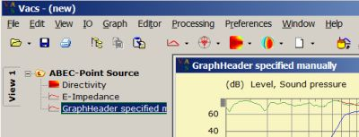

| Identifier | GraphHeader= | |
| Format | String | |
| Purpose | Title of the graph | |
| Used in | BE_Spectrum, Radiation_Impedance, LE_Spectrum | |
GraphHeader= is used in spectral observations where it provides a means to set the header of the graph in VACS manually.
GraphHeader= is only applied for new graphs and is ignored on updates.
For example
BE_Spectrum "SPL"
PlotType=Curves
RefNodes="Spectrum"
GraphHeader="GraphHeader specified manually"
BodeType=LeveldB; Range=50
101 1001 DrvGroups=1001...1004 ID=211
102 1001 DrvGroups=2001 ID=212
103 1001 DrvGroups=All ID=213
